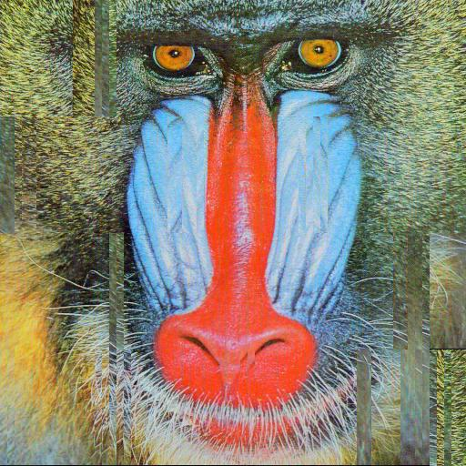
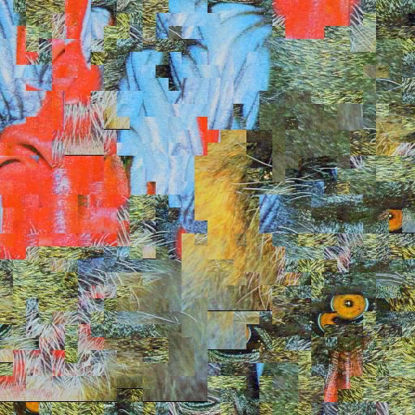
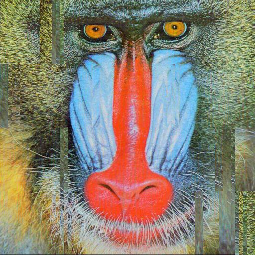
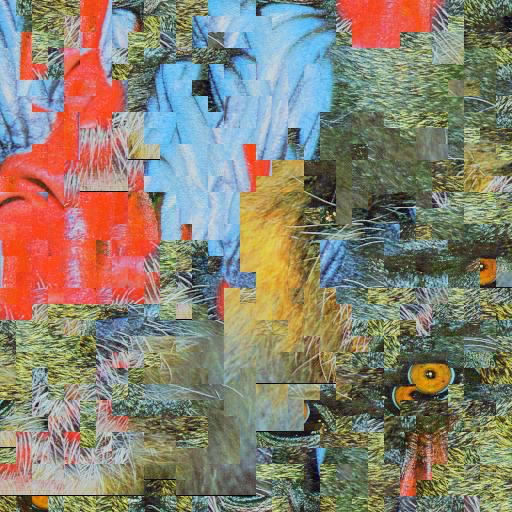

Jigsaw Puzzle Solver
Midterm Project Update
The Computer Visionaries
CS 4476 : Intro to Computer Vision
Georgia Tech Fall 2018
Final Project
Abstract:
We wish to take an image of a medium sized (100 piece) puzzle, and output the completed puzzle image. A program to reconstruct larger puzzles has not been developed yet, so far as we can tell. Our approach has relied heavily on the work done by Travis Allen [2], who was able to solve very simple real-life jigsaw puzzles, and Tom Funkhouser [5]. Travis Allen’s work shows how to process and solve a small puzzle using an picture. Tom Funkhouser’s GAPS algorithm can be used to quickly solve the larger puzzles Allen couldn’t. The work done in phase 1 tested various types of algorithms and fitness functions on different rectangular puzzle sizes. This was done so in phase 2 we can focus on digitizing and solving physical jigsaw puzzles with our algorithms.
Teaser Figures:
Left: input image
Middle: 4 x 32 puzzle solution yielded by the genetic solver/rgb edge difference function
Right: 32 x 32 puzzle solution by the genetic solver/rgb edge difference function
Introduction:
Motivation:
We chose this project mostly out of intellectual curiosity, but there are some practical applications that can be derived out of optimal puzzle reconstruction. For instance, optimal piece reconstruction can possibly be used towards automatic piecing-together of archeological finds, stitching back together a shredded document or picture, or finding the optimal part alignments in some engineering applications. It would be cool to give a program a picture of a jigsaw puzzle and have it output the solved puzzle (opens the door for the algorithm to tell you how to solve it).
Applications:
Potentially useful for reconstruction of items given an image (plane crash, broken glass).
New Approach:
Steps 1 through 5 were previously achieved by Allen on small puzzles. We wish to achieve better performance by using more powerful algorithms to solve the puzzles and by better processing the input pieces. For this project update, we focused solely on testing out different algorithms for solving puzzles, given simple puzzle representations (square, regularly-shaped pieces, rather than real-life jigsaw pieces).
Approach:
To solve the presented problems, we initially applied a few existing algorithms to each problem and compared their performance. Then, we made our own adaptations and optimizations to these existing algorithms to improve their performance for our use cases.
Similarity Functions
We created three different similarity functions to determine which one would most accurately describe the similarity between two puzzle pieces. For each of these functions, we give a brief description of how they were implemented and what their strengths and weaknesses may be. All functions are defined abstractly as requiring two image inputs and their relative position. They return a float value which quantifies the similarity between those images when placed side by side.
RGB Similarity:
The RGB similarity function takes in two images in RGB mode. Along the seam of comparison, the function calculates the sum of squared error between the RGB pixel values of both images. The assumption is that the correct stitching of two puzzle pieces should create continuous color streams across the shared edge. From the results, this similarity function works very well for virtual puzzles we constructed by slicing images into perfectly matching subpieces. When stitching them back together, the pixels should match up perfectly with edge neighbors, providing minimal RGB differences when comparing. In the second part of the project, when we attempt to reconstruct a physical puzzle, we may notice that this function no longer performs as well. There will be an accumulation of error through image rendering and puzzle stitching which this algorithm may not be able to deal with adequately. That is why we have implemented two more similarity measures.
LAB Similarity:
The LAB similarity function takes in two images in RGB mode. The function first converts both images to the LAB color space. CIELAB was designed to be perceptually uniform with respect to human color vision, which could be very useful in simulating how humans solve puzzles. Along the seam of comparison, the function calculates the sum of squared error between the LAB pixel values of both images. The assumption is that the correct stitching of two puzzle pieces should create continuous LAB values across the shared edge. From the results, this similarity function doesn’t seem to work very well for virtual puzzles. In the second part of the project, when we attempt to reconstruct a physical puzzle, this function might perform even worse due to inconsistent lighting which will mess with the lightness component of the LAB color space.
Gradient Similarity:
The gradient similarity function was by far the most complex one to implement. The inspiration for this algorithm came from the paper by Gallagher [3]. In this paper, a gradient similarity function known as Mahalanobis Gradient Compatibility is formally described. Instead of focusing on color and expecting it to be the same on adjacent puzzle, this similarity measure assumes that gradients continue across edges and that penalties are more effectively dealt using a distribution then uniformly. This proposed logic is very different from the color-specific approaches, has been referred to in numerous puzzle solving papers as being a good similarity metric and is therefore worth investigating in our project. Generally explained, the implementation calculates the gradient across each color channel, determines the distributions using mean and covariance, then sums the difference of the gradient across the edge and the distributions. Refer to the paper for a more detailed explanation. It is important to note however that this method does not work well when sharp gradients or edges occur along the border of puzzle pieces.
Genetic Algorithms
One of the approaches we adapted to our puzzle-solving framework was to utilize genetic algorithms. We decided to use code pulled from the GAPS project provided by Funkhouser [5] for this purpose. We needed to modify it so that it would fit the designed framework and unique puzzle constraints. For example, our target solver for this phase takes in a puzzle with the number of rows and columns given, while gaps takes in the pixel width of pieces can only attempt to solve square puzzles. These design choices were made so that the puzzle generation would be more intuitive and the algorithm would generalize better to our framework.
As for the functionality of this approach, we adopted a fairly straightforward permutation-based genetic optimizer. More specifically, we split the image up according to the puzzle piece size and gave each piece an id number. Then, we ran a typical genetic algorithm setup, with the permutation of the id numbers being the configuration to optimize. This meant that we picked a number of elite individuals, utilized Partially Matched Crossovers, and randomly shuffled pieces for our mutations (each piece in a mutation had an probability of being selected for shuffling directly proportional to its fitness).
Hill Climbing Algorithms
Another approach we decided to apply towards our puzzle-solving framework was the classical hill climbing algorithm. Hill climbing, like the genetic algorithm, is a generic optimization technique which can be applied to any problem with a state space and some concept of neighboring states to provide a transition function. This means we can reuse the same fitness and similarity functions used in the genetic algorithm as cost functions for our hill climbing algorithms. We represent our state space as a permutation of the puzzle pieces fixed in the correct orientation, and define neighboring states as any permutations which require swapping the locations of a single pair of pieces.
We implemented the classical hill climbing algorithm [6] knowing the limitations of its design. Hill climbing is greedy and non-stochastic, save for full random restarts, so it is very prone to getting stuck in local maxima. Further, by definition, basic hill climbing explores all neighboring states before accepting whichever state maximally reduces cost. We define neighboring states as states which can be reached by swapping a single pair of puzzle pieces. For that reason, for an n x n square puzzle, classical hill climbing must explore O(n2) neighboring configurations before each modification to the puzzle. If we generously assume each of the O(n2) piece will be swapped only once before reaching its best location, and consider that evaluating the total cost of the puzzle before each transition is O(n2) per neighboring state, we find that random hill climbing has a total expected runtime of O(n6) for an image divided into n x n pieces. For this reason, it's relatively infeasible for random hill climbing to solve large puzzles. We still experiment with random hill climbing as a point of reference for comparison with other techniques.
We also implement simulated annealing; [6] a generalization of hill climbing which stochastically takes state transitions that are locally suboptimal in hopes of moving toward more globally optimal parts of the state space. Instead of exploring all neighboring states before changing states, simulated annealing randomly samples and evaluates a neighboring state at each iteration. The transition is guaranteed to be taken if the sampled state has lower cost, with a small chance of the transition still occurring even if the sampled state has a higher cost. This chance decays with each iteration, meaning the algorithm gets greedier with each iteration. Simulated annealing hopes first to find part of the state space that is low-cost globally, then to greedily find the local minimum of that part of the state space.
Experiments and Results:
Genetic Algorithm
To see the ramifications of utilizing genetic algorithms, we ran three experiments with our genetic solver. The first of these varied the size of the puzzle (i.e. puzzle piece height/width). This allowed us to understand how the genetic approach might handle puzzles with increasingly large problem spaces, in terms of time efficiency and (final piece placement) optimality. This factor is important, since it helps us distinguish the performance of genetic algorithms over other optimization algorithms we experimented with.
For the second experiment, we tried varying the actual puzzle image as well, while keeping puzzle piece size constant. This gave us insight as to how genetic algorithms would generalize to different puzzle images. In other words, it was necessary to know if algorithm performed better on images of certain content descriptions rather than others (such as images with significant negative space, diverse color range, large amount of edges, etc.)
Finally, we evaluated the puzzles utilizing different fitness functions. While the normal fitness function we used was focused on taking the sum of squared differences in RGB values at the edges of each puzzle piece, we hypothesized that changing the fitness functions (or piece similarity functions, as we called them) would have a large impact on the performance of the puzzle solver. As a result, we took notice of any changes in the speed of the algorithm, as well as the accuracy of the solved puzzle with different functions used.
As a note, we generally kept the genetic algorithm hyperparameters the same for all of these experiments so that we’d have reliable constants within our procedures. Upon initial testing, we found that our preferable hyperparameters for most puzzle sizes were a population size of 200, a mutation rate of 0.1, and an elite size of 10. Furthermore, the algorithm would prematurely finish if the elite fitness value of a population had not changed for 10 consecutive iterations.
Experiment 1: Size Variation
We ran our genetic solver on the 4x32 and the 32x32 puzzle images. We obtained the puzzles by running the following commands:
“./image_scrambler ./images/baboon.jpg -r 4 -c 32”
“./image_scrambler ./images/baboon.jpg -r 32 -c 32”
This output the following puzzles:
From there we ran psf on each of the above puzzles with the following parameters:
The evaluation metric used was the rgb difference between neighboring pieces. The genetic solver minimized the difference by maximizing 1/rgb_diff. In the end we evaluated the two different sized puzzles visually, to see how our algorithm performed (which one had less artifacts and placed the most pieces in the right place).
The results can be seen below:
Experiment 2: Fitness Variation
We ran our genetic solver on a 10x10 baboon puzzle. We obtained the puzzle used to generate these figures by running the following commands:
“./image_scrambler ./images/baboon.jpg -r 10 -c 10”
We then attempted to solve the puzzle using the rgb, lab, and gradient similarity functions we produced. All experiments genetic parameters were kept static as to see the true effect changing the fitness function yields (20 iterations, population of 200, and mutation rate of .1)
These trials output the following puzzle solutions:
Left: RGB similarity output
Middle: gradient similarity output
Right: LAB similarity output
Experiment 3: Fitness Variation
For experiment 3 we generated 2 10x10 puzzles: one of the baboon.jpg, and one of the starry.jpg.
The output puzzles can be seen below:
Left: Starry night puzzle
Right: Baboon puzzle
We then attempted to solve these puzzles using our standard genetic solver (population of 200, 20 iterations, mutation rate of 0.1) and received the below results.
Left: Starry night puzzle solution
Right: Baboon puzzle solution
Results:
Genetic Algorithm
Experiment 1:
Varying the size of the puzzle showed how far we can push genetic algorithms to solve puzzles. On my laptop, the 4x128 puzzle was solved in ~ 5 minutes while the 32x32 puzzle was “solved” in over an hour. The larger puzzle solution shows a clustering of pieces by color and fails to capture the initial image adequately. This is possibly the result of several factors. One such factor may have been that the pieces were too small (ie had edges that were too tiny) to be used effectively. This would result in the algorithm struggling to effectively match pieces because the information contained on the edge of each piece is too low to force the algorithm to group it correctly.
This hints at the other factor as well. Our population size may have been too small to solve the puzzle. Even if we ran 1000 iterations, if the population size was left at 200, the algorithm might get stuck in a local optima and be unable to correctly solve the puzzle. Upping the population size is not an effective way to solve the 32x32 puzzle though since the program already took a significant amount of time to run.
It is interesting to note that the 4x32 puzzle is solved well, but not optimally. There are still pieces out of order. These incorrectly placed pieces have a low rgb edge difference between each other since they happen in high noise areas of the picture (all mismatched pieces in the output come from fur around the face of the baboon in the image). This shows our solver may not be good at solving very noise puzzles such as a forest scene.
The results of this experiment are to be expected. The 1000+ piece puzzle was poorly solved even though it took a good chunk of time to solve. The smaller puzzle was solved well but indicates we should look into ways of correctly placing pieces in high energy areas of a puzzle image.
Experiment 2:
RGB performed the best. We saw problems with the correct piece placement in high energy areas of the image. Overall though, the genetic algorithm effectively uses RGB edge differences to place pieces relative to one another.
The gradient similarity function performed second best. It was able to place most pieces correctly, but got a large chunk offset wrong with the pieces below the baboons nose. This could be the result of less information being present in the gradient than the strict RGB difference.
The LAB similarity function performed the worst of the similarity functions we tested. It misplaced key pieces such as the eye component. It did do better than random placement of pieces though.
Experiment 3:
Finally, experiment 3 results show no clear winner. Both puzzles had areas of high and low noise. Chunks of both puzzles are places correctly, with only a few tiles left misplaced. Because starry night has more unique sections (unlike the baboon where a majority of the pieces are similar because they contain fur) the genetic solver does a slightly better job on solving it than it does for baboon. The only mismatched piece lie at the bottom of the image. Finally, it also probably helps that pieces have a high continuity through them in starry night. The flowing brush strokes continue through the pieces which makes it easier for our algorithm to detect misplaced pieces.
Hill Climbing Algorithms
Our experiments with hill climbing algorithms serve to investigate the effects of the optimization algorithm itself on puzzle solving performance. For that reason, we hold other variables constant. Each trial uses the same similarity function, RGB edge differences. All trials operate on either a 3x3 or 6x6 tiling of the baboon image. Each trial divides the image into square pieces, and the results of four random restarts are displayed for each experiment, sorted by total cost.
Experiment 1:
As mentioned in our approach, classical hill climbing was implemented knowing that its runtime is unfeasible for large puzzles. For that reason, we experiment with n x n puzzles for values of n up to 6. For n = 3 with four random restarts, we obtain a successful result using the RGB edge-difference squared similarity metric:
Each failure case demonstrates a local minimum of our cost function where hill climbing gets stuck - swapping any two pieces results in a strict increase of overall cost. Certain features of these failure cases demonstrate how hill climbing fails. Local similarity between groupings of pieces like the red nose and blue patches of skin are greedily associated and then cannot be detached without resulting in a temporary cost increase, causing random hill climbing to terminate suboptimally.
The problem worsens for larger values of n. For n=6, we see results consistent with the failure cases of n=3. Local consistencies that are not part of the real solution are captured by the similarity function and hill climbing greedy approach, leading to an abundance of failure cases. We explain this by inspecting the state space of the problem. The number of locally minimal permutations increases rapidly with the number of pieces, while the number of global minima stays constant at one. The probability of greedily arriving upon the global cost minimum without encountering a local minimum first therefore decreases exponentially with the number of pieces in the puzzle. The last notable artifact of these images is found at the edges. Because our cost function simply ignores edges of pieces that are facing the edge of the puzzle, local optima can exist wherever high-contrast edges face the outside of the image, as more than one swap would be required to reduce the arrangement's total cost.
Experiment 2:
Knowing the critical flaws of classical hill climbing, we opted to experiment with variants of hill climbing that deal more effectively with the quadratic number of neighboring states, and the exponentially increasing number of local optima. Simulated annealing is an algorithm that attempts to address these issues by stochasticly making state transitions that seem bad locally in an effort to find the global optimum of the state space. We implemented simulated annealing as described in [6]. Simulated annealing usually found the global minimum (correct solution) for n=3:
Compared to classical greedy hill climbing, simulated annealing makes significant improvements to global cost. In our trials displayed here for n=6, global average cost was reduced by 16.4% relative to random hill climbing using 5000 iterations, linear temperature decay, and an initial temperature of 105. Success cases for n = 6 demonstrate how random state changes in simulated annealing promote global consistency better than classical hill climbing. However, simulated annealing does an inadequate job of finding the global minimum in our application, especially relative to the genetic algorithm.
Hill Climbing Results:
Experiment 1:
Classic hill climbing demonstrated the fundamental problem with greedily using the cost of individual transitions to find a cost minimum in a complex state space. Since hill climbing with random restarts has no way to undo state changes that lead to suboptimal local minima, the search has an extremely low probability of finding solutions that are good globally. This probability decreases further and further with the complexity of puzzle.
The tendency of hill climbing to find itself stuck in local minima also demonstrates the value of crossover to genetic algorithms. Hill climbing really acts like a greedy genetic algorithm with no probability of crossover, where a population size of one is evolved strictly via mutation. The poor performance of hill climbing demonstrates how crossover enables the genetic algorithm to make informed leaps across the state space towards regions that are likely to contain the global minimum.
Experiment 2:
Simulated annealing attempts to address the issues of standard hill climbing more directly, by introducing a probability of moving one step in a random direction within the state space. The contrast in performance between the 3x3 and 6x6 puzzles shows how increasing the number of pieces massively increases the size and complexity of the problem. It is clear from the results of experiment 2 that simulated annealing is able to assist hill climbing in moving toward regions of the state space that are better - large, consistent sections of the puzzle demonstrate these effects. For the 3x3 image, these small steps are enough to identify the global minimum reliably. However, because steps through the state space are so small, it is still extremely unlikely that the state settles on the global minimum for a 6x6 puzzle, and especially for puzzles with even more pieces. Even with substantial experimentation with the temperature function, initial temperature, and number of iterations of simulated annealing, performance on the 6x6 puzzle is unreliable at best. The inadequate performance of simulated annealing on our puzzle solving task again emphasizes how valuable crossover is as a tool for identifying important regions in massively complex state spaces.
Conclusion:
While we weren’t able to look at every algorithm we intended to implement in our project proposal (such as modified Kruskal's and Graph Cuts), we did succeed in testing out various puzzle-solving optimizers by implementing and testing versions of Hill Climbing and Genetic Algorithms, in addition to experimenting with several different fitness functions, as discussed throughout this report.
After performing various experiments using both RHC and GA techniques, we found that Genetic Algorithms, under the right conditions, performed best overall as a puzzle-solving optimizer due to its tendency not to get stuck in local optima. This factor was important since the problem we were trying to solve has non-repeatable ordering constraints, where its fitness score has an underlying function that is not convex, continuous, or sloped in any general direction. Therefore, as hill climbing and simulated annealing often rely implicitly on a smooth underlying function with few local optima, we found they were not suitable for this problem's complex state space, and very often get stuck in local optima.
Future Work:
As mentioned previously, this project update accomplished the first section of our goals for the project as a whole - we developed and tested out algorithms that will be used on more complex underlying puzzle structures. However, our overall aim for the project is to be able to create a solver that can process and optimize a real-life (medium-sized) puzzle, as expressed in our original proposal.
For the final project update, therefore, we will focus on developing methods of processing real-life puzzle pieces that aren’t as regularly-shaped. Then, in that same update, we plan to apply the algorithms noted in this update to ‘put together the disparate pieces’ of this research project (Pun definitely intended).
References:
[1] https://arxiv.org/pdf/1711.06769.pdf
[2] https://web.stanford.edu/class/cs231a/prev_projects_2016/computer-vision-solve__1_.pdf
[4]
https://medium.com/cornell-tech/jigsolved-computer-vision-to-solve-jigsaw-puzzles-70b8ad8099e5
[5] https://github.com/tomfunkhouser/gaps
[6] Russell, Stuart Jonathan, and Peter Norvig. Artificial Intelligence: a Modern Approach. 3rd ed., Pearson, 2018.